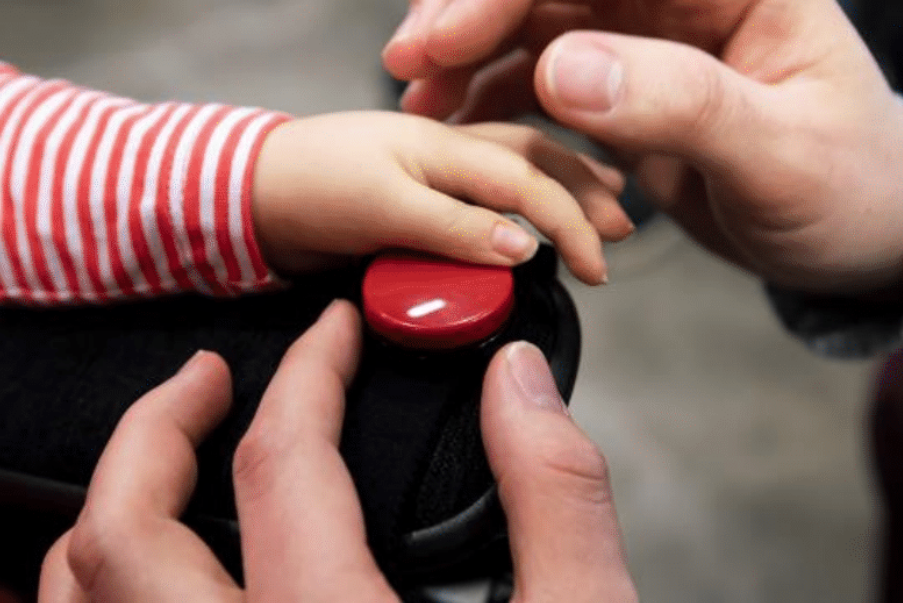
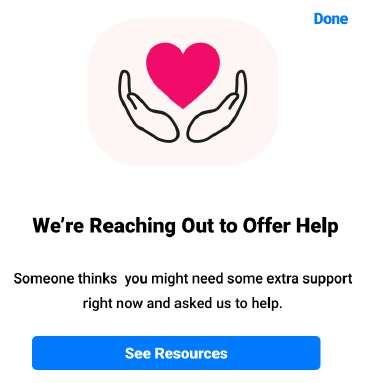
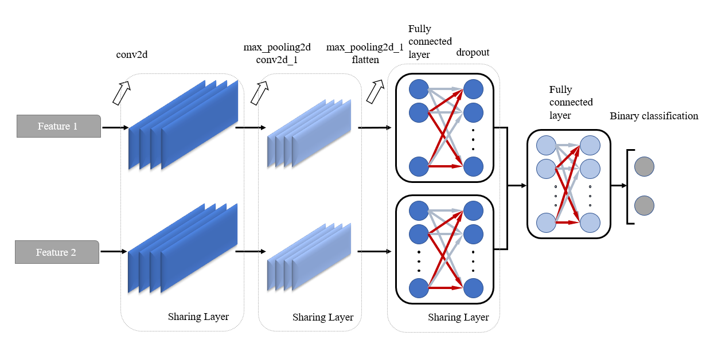
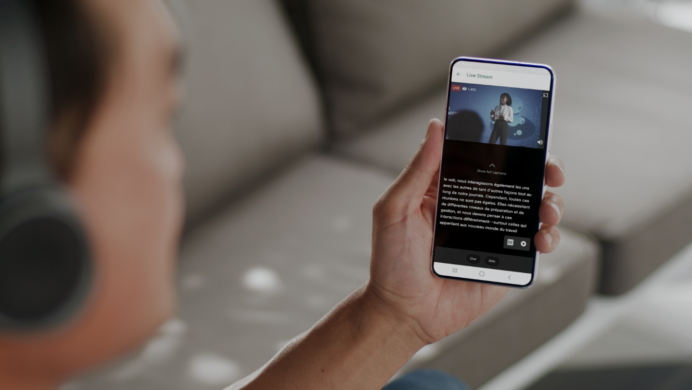

C'mon. Let's go.
AiRPLAY: Inclusive AR Game Development
The digital twin enabled by Augmented Reality (AR) provides astonishing futuristic possibilities regarding assistive technology. In this project, we created an inclusive air hockey game with AR and wearable devices for people with mobile disabilities. Based on the prior work, we rearchitected the entire system with ROS2 to achieve robustness and flexibility for a business product. We also created our own inclusive user interface controller with BLE module and development boards merging former accessible controller designs.

Wellbeing Interventions on Social Media
Master's thesis
"I feel like it's a reminder of me having mental illness." Social media platforms are becoming the battlefield of debating what should and should not be done to protect people from suicide and self-harm. The dilemma between moral connotations and reponsibilities v.s. users' autonomy and stigma remains unsolved. To provide insights from a non-ableist perspective, I conduct semi-structured interviews with people who have lived experience of depression and intend to produce design recommendations for designing and structuring wellbeing interventions.

Self-Supervised Audio Embedding for Depression Detection
Bachelor's thesis
Considering the limited training data in depression detection tasks, I implemented a self-supervised audio embedding strategy for feature engineering and obtained a higher precision based on existing benchmarks. When I was working on this study I was also wondering: what kind of feature engineering / pre-training tasks make sense for this specific topic? Are the extracted features always unaccountable?
Click here to view the project: Depression Detection Project

Disabled Live-Streamer: Motivations, Challenges, Strategies
We investigated what motivations, challenges, or strategies are disabled live-streamers and addressed them under the Misfits feminist materialist disability framework. In particular, we observed how social burdens are distributed to marginalized populations, and how identity intersections exacerbate this effect.
